図解：プラカートシュティール
プラカートシュティールの成立と展開
- 19世紀末
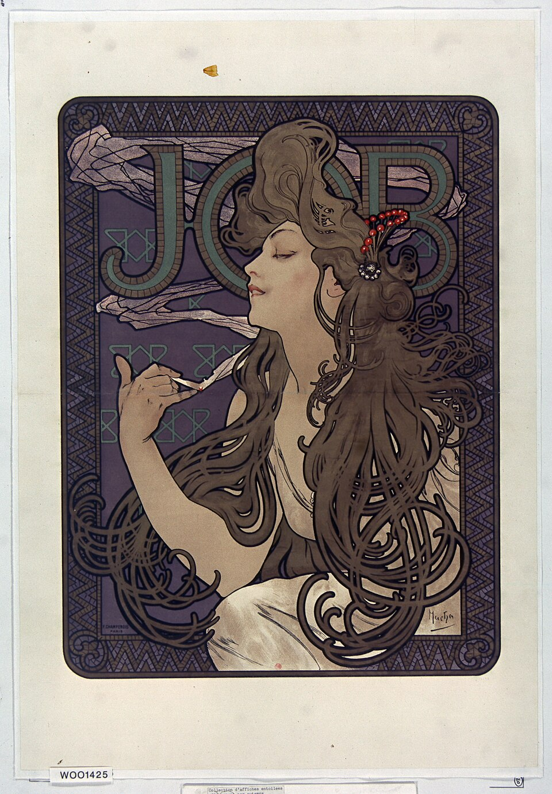
装飾的なポスターアール・ヌーヴォーなど
何の広告か分かりにくい - 20世紀初頭
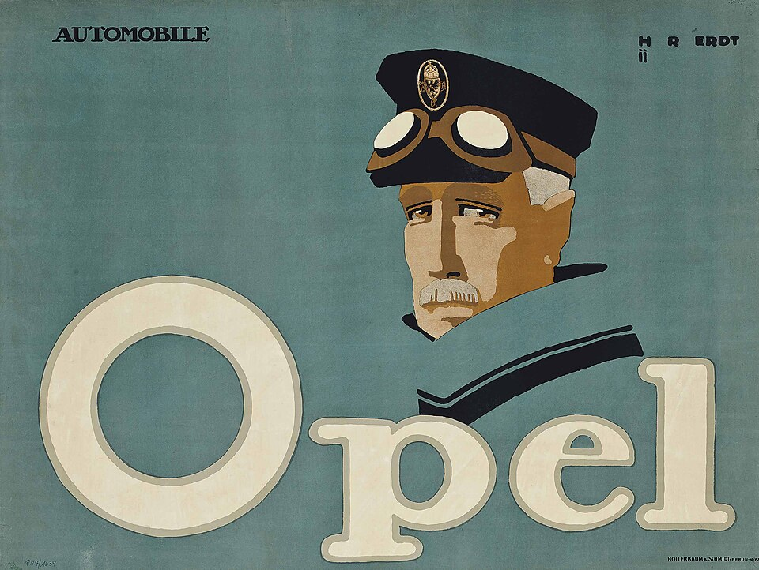
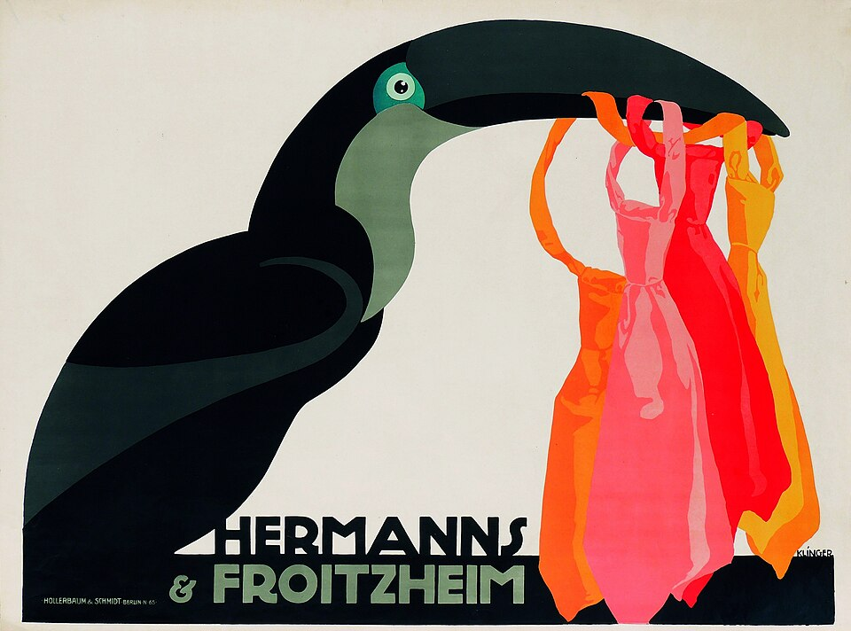
ベルンハルトから広告会社へ《プリースター》が一等
エルト・クリンガーが発展 - 1905〜14
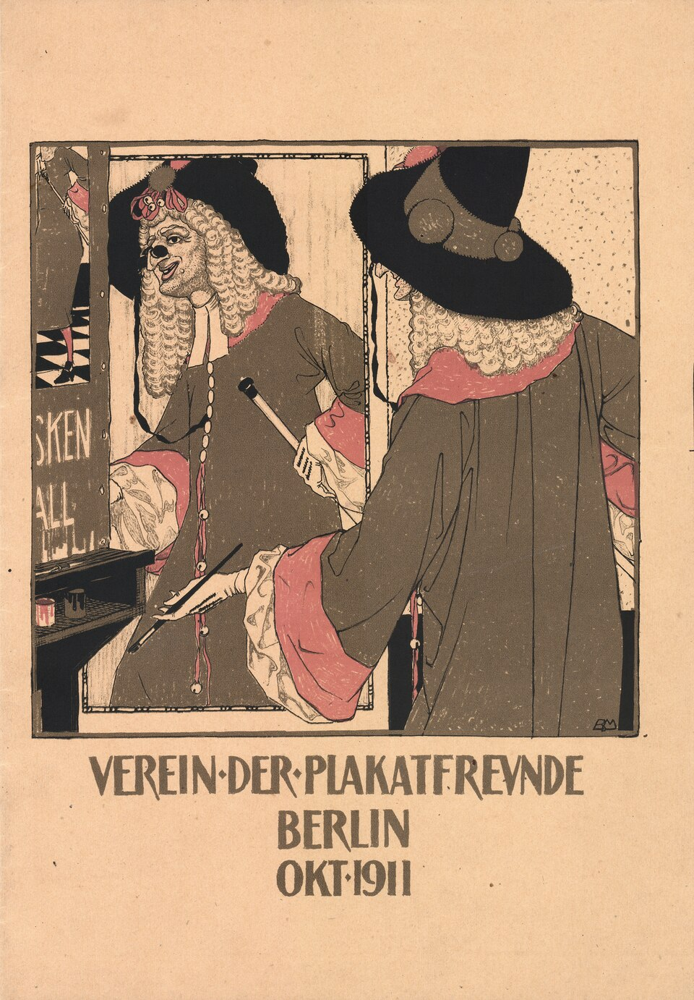
愛好家協会と黄金時代ザックスが協会を設立
機関誌で保存・批評 - 1914〜
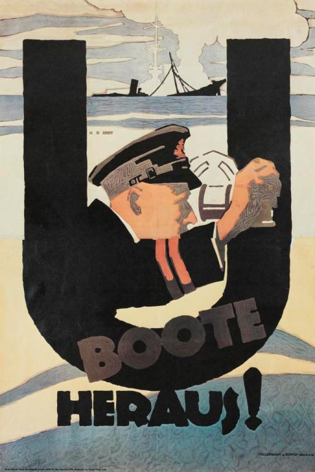
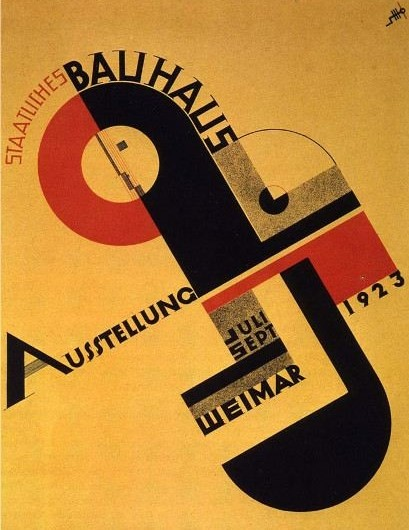
戦時宣伝と戦後戦争国債の購入を促す
1920年代はバウハウスも
それまでと何が違うか
図版の出典
- 《JOB（巻紙の広告ポスター）》アルフォンス・ミュシャ：出典（Public domain（PD-Art／PDM））
- 《オペル》ハンス・ルディ・エルト：出典（Public domain（PD-Art／PDM））
- 《ヘルマンス＆フロイツハイム》ユリウス・クリンガー：出典（Public domain（PD-Art／PDM））
- 《ポスター愛好家協会・ベルリン、1911年10月（機関誌表紙）》ブルクハルト・マンゴルト：出典（Public domain（PD-Art／PDM））
- 《U-Boote heraus!》ハンス・ルディ・エルト：出典（Public domain（PD-Art／PDM））
- 《国立バウハウス展》ヨースト・シュミット：出典（Public domain（PD-Art／PDM））
重要人物
様式をつくったデザイナー
- ルシアン・ベルンハルトデザイナー《プリースター》で不要な要素を削りマッチだけを残す
- ハンス・ルディ・エルトデザイナー商品でなく人物やブランドのイメージを描く
- ユリウス・クリンガーデザイナー人物や動物を大胆に単純化し、ユーモアを加える
- エルンスト・ドライデンデザイナー豊かな人物描写で独特の世界を作る
- ルートヴィヒ・ホールヴァインデザイナーミュンヘンで服装や質感、力強い色面を押し出す
見いだし、広めた人
- エルンスト・リトファス印刷業者広告を集約する円柱形の広告塔を考案
- エルンスト・グロヴァルト広告専門家捨てられた《プリースター》を拾い一等に推す
- ハンス・ヨーゼフ・ザックス収集家ポスター愛好家協会を設立、機関誌を編集
肖像・図版の出典
ポスター様式の特徴と区別
装飾より伝達を優先するポスター様式
動画 0:57～20世紀初頭のドイツで、広告デザインの革命が起こりました。それがプラカートシュティールです。装飾性よりも情報伝達を優先するこの様式は、現代にも通じる視覚表現の基本原理を形づくりました。プラカートはポスター、シュティールは英語のスタイルに当たる語で、ポスター様式という意味です。
19世紀末に流行したアール・ヌーヴォーやユーゲントシュティールでは、植物や女性像をモチーフに、流れるような曲線と装飾性を特徴とするポスターが多く制作されました。それに対し、ルシアン・ベルンハルトの《プリースター》は、マッチの絵とブランド名だけを残し、ほかの要素を極力排した簡潔な構成です。プリースターはマッチのブランド名です。
図柄と作者は判明するが年代・刷りと自由利用条件が未確定。公式画像は© VG Bild-Kunst表示、作者1972没。古い出版のみを全地域の自由利用と判断せず保留。
《プリースター》
- 作者
- ルシアン・ベルンハルト
- 制作時期
- 不明
- 所在地・所蔵
- 動画の刷り・所蔵個体は未確定
- 素材・形式
- 広告ポスター
- 原題
- Priester
- 動画の年代
- 1905～1906年
出典・画像について
動画の年代表記：1905～1906年。作品情報と区別。
作品情報：作品・画像・利用条件 · 所蔵館の作品ページ
同じたばこの広告でも、アール・ヌーヴォーでは女性像や曲線的な装飾が前面に出ます。プラカートシュティールでは、それらを大胆にそぎ落とし、売りたい商品そのものを押し出します。単なる手抜きではなく、商品の情報を伝えるために、あえて単純な構成を選んだのです。

《JOB（巻紙の広告ポスター）》
- 作者
- アルフォンス・ミュシャ
- 制作時期
- 1896年
- 所在地・所蔵
- フランス国立図書館
- 素材・形式
- 広告ポスター
- 原題
- JOB
出典・画像について
紙巻きたばこの巻紙の広告。
画像出典：Bibliothèque nationale de France / Wikimedia Commons
Public domain（PD-Art／PDM）
作品情報：作品・画像・利用条件
ザッハプラカートとの違い
動画 2:21～これに近い語としてザッハプラカートがあります。直訳すれば「物のポスター」で、美術史では即物的ポスターなどと訳されます。日本ではプラカートシュティールよりもなじみがあるという印象もあり、両者はしばしば同じ語のように使われます。ただし、厳密には区別できる面があります。
アメリカ初のポスター美術館ポスター・ハウスのキュレーター、アンジェリーナ・リッパートは、プラカートシュティールを、ベルンハルトの作品を通してよく知られる様式として説明しています。大胆なハンドレタリングと平坦な色面を伴う、単純な図像が特徴です。《プリースター》なら、2本のマッチが単純な図像、大きく書かれたブランド名がハンドレタリングに当たり、それらが単色の平坦な色面の上に置かれています。
一方、ザッハプラカートは、プラカートシュティールと非常に近いものの、特に「オブジェクト・ポスター」を指す語です。プラカートシュティールの様式的要素を取り込みながら、通常はブランド名だけの単純な文字を添え、中心的なモチーフに焦点を当てます。中心的なモチーフとは、マッチの広告ならマッチ、たばこの広告ならたばこ、つまり宣伝したい商品です。ベルンハルトの作品は、両方に当てはまる典型例です。
区別は必ずしも厳密ではない
動画 4:07～大胆な文字、平坦な色面、単純な図像という条件を満たすポスターでも、宣伝したい商品以外のものが目立つ場合があります。タイプライターの広告なら、狭義のザッハプラカートで描く図像はタイプライターだけになります。ブランド名と商品を描き、ほかの要素を極力排するという考え方です。

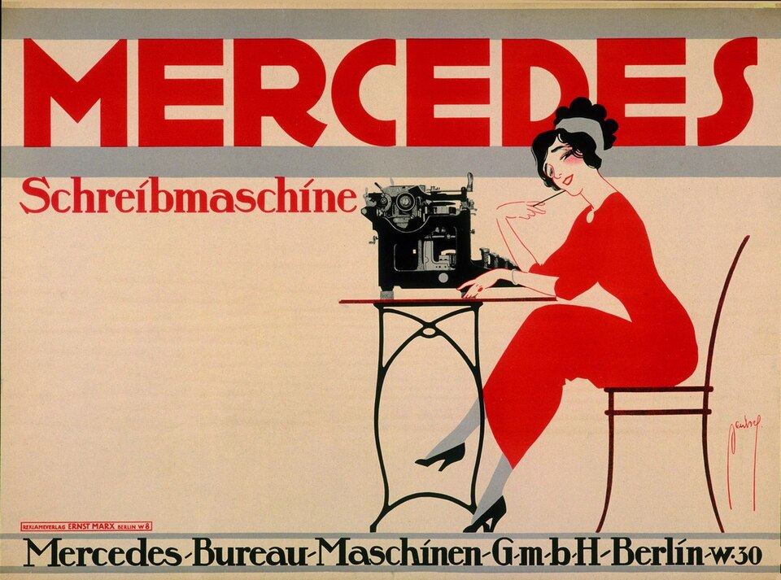
画像を拡大 ＋《メルセデス・タイプライター》
- 作者
- エルンスト・ドイチュ＝ドライデン
- 制作時期
- 1911年
- 所在地・所蔵
- 掲載画像の刷りの現所蔵先は不明（旧競売資料）。同図柄所蔵例：フォルクヴァンク美術館・ドイツ・ポスター美術館、DPM 4466
- 素材・形式
- カラーリトグラフ
- 原題
- Mercedes Schreibmaschine
出典・画像について
ただし、実際の区別はそれほど厳密ではないようです。カラフルなネクタイを宣伝しながら、それをくわえたオオハシが目立つポスターも、書籍などではザッハプラカートと扱われることがあります。この呼び方を誤用と決めるのではなく、両者は近く、境界も曖昧と捉えられます。ここでは、定義上やや広い表現を含められるプラカートシュティールという語を用います。
都市と広告が変わる
街の広告とリトファス柱
動画 6:03～19世紀の欧米の大都市では、印刷技術の発達と広告の普及に伴い、壁や塀などにビラやポスターが無秩序に貼られるようになりました。景観を損ねるだけでなく、剥がれた紙などのごみも生み、自治体の悩みとなっていました。ベルリンの印刷業者・出版人エルンスト・リトファスは、広告専用の柱を置き、そこへ広告を集約することを考えます。1855年から設置された円柱形の広告塔が、リトファス柱です。映像広告など新しい媒体の登場で役割が縮小し、撤去も進んでいますが、現在も広告に使われるものがあります。

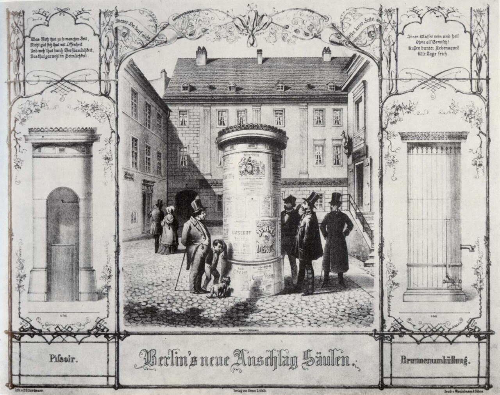
画像を拡大 ＋《リトファス柱の古写真》
- 作者
- 撮影者不詳
- 制作時期
- 不明
- 所在地・所蔵
- 撮影された柱の場所・個体未確定
- 素材・形式
- 写真
- 動画の年代
- 1855年（柱の設置開始年。写真撮影年ではない）
出典・画像について
1855年頃の石版画「ベルリンの新しい広告柱」（F・G・ノルトマン画）。
画像出典：F. G. Nordmann / Wikimedia Commons
Public domain
作品情報：画像出典・利用条件
制作メモ
動画400秒の右図はこの石版画の中央の場面と同じ図柄。
限られた掲示面で一瞬で伝える
動画 6:56～広告を決まった場所へ集約すれば管理しやすくなる反面、限られた掲示面で広告同士の競争が激しくなります。より人目を引くデザインが求められるようになりました。産業革命による大量生産で商品が市場にあふれ、販売競争が激しくなったことも背景にあります。大量に作っても消費者に注目され、買われなければ意味がありません。広告の重要性も高まっていったのです。
19世紀半ばのポスターは、一目で印象を与えるより、必要な情報をすべて詰め込むような、文字の多い構成でした。時代が進むにつれ、文字情報よりも絵の占める割合が大きくなります。アール・ヌーヴォーやユーゲントシュティールは文字を減らし、大きな人物像や装飾的な図柄、その美しさで人々を引きつけました。文字も絵の一部となり、ポスターを美しく飾ります。その根には、日常のものも芸術にする「生活の芸術化」という考えがありました。
書誌は確認したが原画像直接照合と自由利用条件は未確認。販売写真を転載しない。参考書誌 https://www.abebooks.com/book-search/title/im-circus-renz/ 。
《サーカス・レンツ公演ポスター（1864年9月19日）》
- 作者
- 作者不詳
- 制作時期
- 1864年
- 所在地・所蔵
- 現所蔵先未確認。古書販売資料に出品記録
- 素材・形式
- 緑色紙への活版印刷・木版挿絵
- 原題
- Circus Renz. Montag den 19. September 1864. Zwei Vorstellungen. Vier arabische Hengste.
出典・画像について
こうした様式が流行し、各地で似たデザインが増えると、目新しさだけでは人目を引きにくくなります。人物や装飾が大きく扱われるため、一見して何の商品を宣伝しているのか分かりにくいという欠点もありました。そこで、絵も文字も必要最小限までそぎ落とすプラカートシュティールが登場します。絵画などが鑑賞されることを目的とするのに対し、ポスターは通りすがりの人へ一瞬で情報を伝えるものです。交通手段が増え、都市の移動が速くなる中、立ち止まって見る人は多くありません。目についた一瞬で情報を伝える手法を、時代が求めていたともいえます。20代前半だった若いベルンハルトは、その答えを鮮烈に示しました。
ベルンハルトと様式の成立
ベルンハルトと《プリースター》
動画 9:32～ルシアン・ベルンハルト、本名エミール・カーンは、1883年にドイツのシュトゥットガルトで生まれました。ミュンヘンのアカデミーで短期間学んだ後、ベルリンでデザイナーとして活動します。20世紀初頭のベルリンは、商業・文化・産業の中心地として台頭していました。拡大する市場を活用しようと、企業は斬新で刺激的な広告を求め、定期的にポスターコンテストを開きます。マッチのブランド、プリースターも、新しい才能を発掘するためにコンテストを開催していました。
《プリースター》の誕生には、ベルンハルトが初めから簡素な構成を考えていたのではなく、ユーゲントシュティール風のポスターから不要な要素を削った結果、マッチだけが残ったという逸話があります。最初は、チェックのテーブルクロスを掛けた丸いテーブルに、火のついた葉巻を載せた灰皿とマッチ箱を描いたとされます。寂しく感じて、背景に肌の露出の多い服の踊る女性たちを加えましたが、その日のうちに複雑すぎると考え直し、塗りつぶしました。
訪ねてきた友人が、それを葉巻の広告かと尋ねたため、葉巻も塗りつぶします。さらに目立ちすぎるテーブルクロスと灰皿を消し、最後には簡素なテーブル上の2本のマッチだけが残った、といわれます。マッチの広告を葉巻の広告と間違えられたことから要素を削ったという話は、繰り返し語られています。しかし、応募作は従来とかけ離れた簡素さのためか、初めは審査員に評価されず、捨てられてしまいました。
遅れて来た審査員の一人、広告専門家エルンスト・グロヴァルトがその作品を拾い、「これこそ一等」と高く評価して、ほかの審査員を説得しました。彼は、優れたポスターは読まれるのではなく見られる必要がある、と考えていました。読むことより、見ることで内容を伝えるという考えに、ベルンハルトの作品が合っていたため選ばれたと考えられます。
広告会社を通して広がる様式
動画 12:05～ベルンハルトはグロヴァルトに見いだされ、大手広告会社ホラーバウム・ウント・シュミットとの契約を得ました。さまざまな企業・商品のポスターを次々と手掛け、会社名と商品の種類が一目で分かる簡潔な表現を、一つの広告様式として洗練させます。同社のほかのデザイナーにも影響を与えました。代表的なのが、ハンス・ルディ・エルトとユリウス・クリンガーです。二人は単に模倣するのではなく、独自の作風へ発展させました。
作者1972年没、原作の自由利用条件未確認。Flickr別資料は1913年・Some rights reservedで代用しない。
《シュティラー》
- 作者
- ルシアン・ベルンハルト
- 制作時期
- 1908年
- 所在地・所蔵
- ニューヨーク近代美術館（468.1987）
- 素材・形式
- リトグラフ
- 原題
- Stiller
出典・画像について
作品情報：作品・画像・利用条件 · 所蔵館の作品ページ
原作と画像の自由利用条件未確認。別の電球ポスターや展示風景で代用しない。
《オスラム・アゾ》
- 作者
- ルシアン・ベルンハルト
- 制作時期
- 1910年頃
- 所在地・所蔵
- ニューヨーク近代美術館（467.1987）
- 素材・形式
- リトグラフ
- 原題
- Osram Azo
出典・画像について
作品情報：作品・画像・利用条件 · 所蔵館の作品ページ
商品・人物・記憶を描く
人物とブランドを描いたエルト
動画 12:40～エルトの自動車広告《オペル》には、自動車ではなく、運転するドライバーが大きく描かれています。当時、自動車を買えるのは限られた富裕層であり、自動車に関心のある人々には、オペルは既に一定の知名度を持っていました。対象を絞れば、車そのものを描いて広く説明する必要はありません。富裕層を思わせる男性は購入意欲を刺激し、その車に乗れば自分もこうした人物になれるという憧れも抱かせます。

《オペル》
- 作者
- ハンス・ルディ・エルト
- 制作時期
- 1911年
- 所在地・所蔵
- 画像出典：クリスティーズ掲載個体。現所蔵先不明
- 素材・形式
- リトグラフ
- 原題
- Opel
出典・画像について
たばこメーカー、マノリの広告を比較すると、違いが分かります。ベルンハルトが商品そのものを描くのに対し、エルトは販売員のイメージを描きました。制服をきちんと着こなす高級感のある販売員によって、商品にも洗練された都会的な印象を与えます。瞬時に伝えられるのは商品の形だけではありません。ブランドが持つイメージや、それを使う人の姿も視覚化できることを、エルトは示したのです。
ローカル保存・掲載できる自由利用条件未確認。ベルリン公式 https://search.smb.museum/object/obj-924994 はVG Bild-Kunst表示。動画表示は1910年、入力1908年は親の読取誤り。
《マノリ》
- 作者
- ルシアン・ベルンハルト
- 制作時期
- 1910年
- 所在地・所蔵
- ニューヨーク近代美術館（238.1987）。別所蔵例：ベルリン国立美術館・美術図書館（924994）
- 素材・形式
- リトグラフ
- 原題
- Manoli
出典・画像について
作品情報：作品・画像・利用条件 · 所蔵館の作品ページ

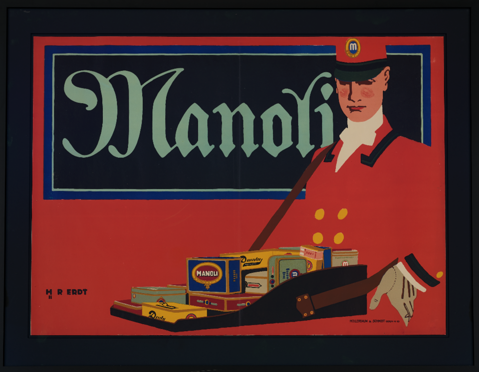
画像を拡大 ＋《マノリ》
- 作者
- ハンス・ルディ・エルト
- 制作時期
- 1911年
- 所在地・所蔵
- マルク・ヴェーグナー・コレクション、ベルリン（Commons出典記録）
- 素材・形式
- 多色リトグラフ
- 原題
- Manoli
出典・画像について
Commons本文PD-Art/PDM。原メタデータを保存。人物の没年表記は1918/1925の揺れがある。本文へ新規の没年は加えない。
画像出典：Hans Rudi Erdt
Public domain（PD-Art／PDM）
作品情報：作品・画像・利用条件
制作メモ
構造化データにはCC BY-SA4.0の旧表示も残る。
クリンガーと個性的なデザイナーたち
動画 14:11～クリンガーは、視覚的に強い人物や動物を大胆に単純化し、ユーモアやウィットを加えました。ネクタイをくわえるオオハシのポスターが、その例です。宣伝するヘルマンス＆フロイツハイムは衣料品の会社で、競合が多く、商品だけを描いても他社と区別しにくくなります。そこで、商品と直接関係しない強烈なモチーフを組み合わせ、人目を引き、記憶させようとしたのです。ベルリン・ヨハニスタールの飛行場の広告では、飛行機を見上げる人々を描いています。

《ヘルマンス＆フロイツハイム》
- 作者
- ユリウス・クリンガー
- 制作時期
- 1911年
- 所在地・所蔵
- ヴィラヌフ・ポスター美術館（ワルシャワ国立美術館、Pl.O.2165/1）
- 素材・形式
- 紙にリトグラフ
- 原題
- Hermanns & Froitzheim
出典・画像について

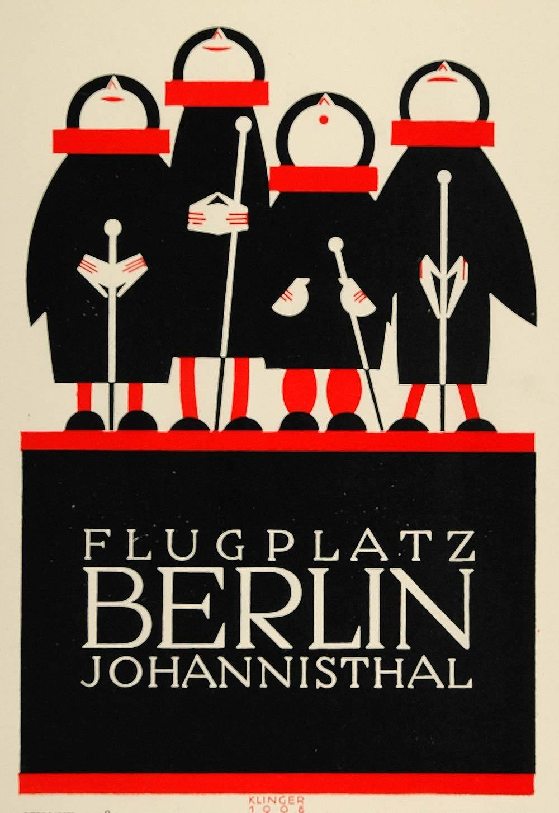
画像を拡大 ＋《ベルリン・ヨハニスタール飛行場》
- 作者
- ユリウス・クリンガー
- 制作時期
- 1908年（意匠）／1924年（掲載図版）
- 所在地・所蔵
- 掲載図版の所蔵先は不明
- 素材・形式
- 候補：2色リトグラフによる複製
- 原題
- Flugplatz Berlin Johannisthal
- 動画の年代
- 1908年
出典・画像について
画像出典：Julius Klinger / Period Paper / Wikimedia Commons
Public domain (PD-Art)
作品情報：画像出典・利用条件 · 作品・画像・利用条件
制作メモ
動画の赤・黒の配色、4人の人物、下部の文字配置に一致する1924年の二色石版図版。
豊かな人物描写によって独特の世界を作ったエルンスト・ドライデン、ミュンヘンで活動し、服装や質感、力強い色面を押し出したルートヴィヒ・ホールヴァインらも登場しました。ドイツの広告は、こうしたデザイナーたちによって大きく変わります。単純化しながらも、何を前面に出すかによって、それぞれの個性が表れました。

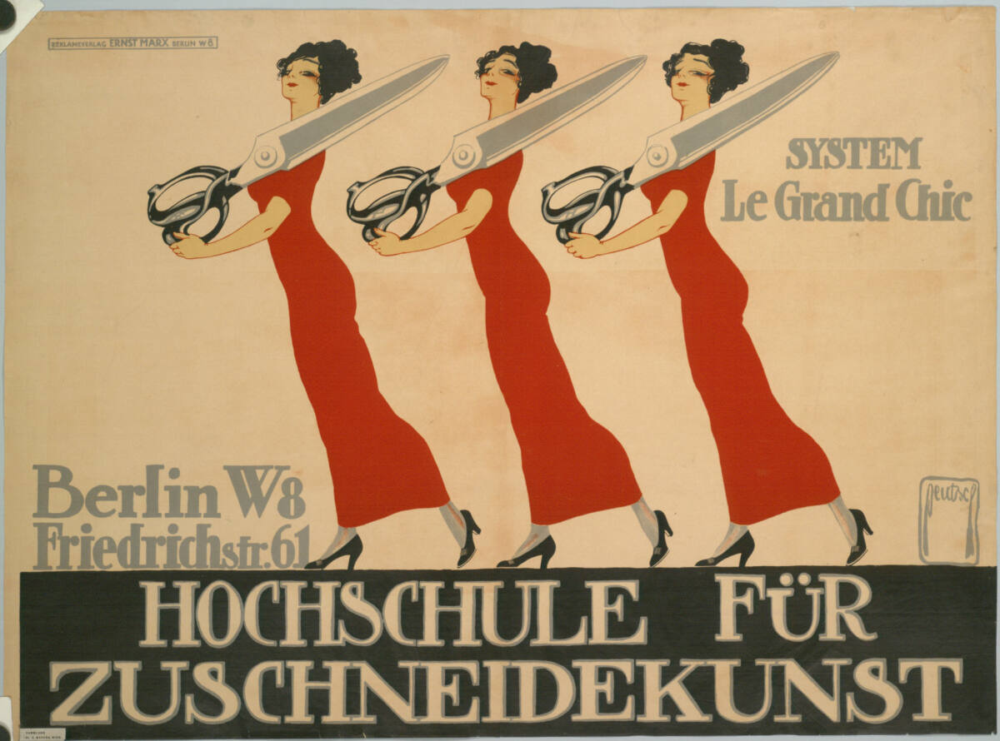
画像を拡大 ＋《裁断技術学校「システム・ル・グラン・シック」のポスター》
- 作者
- エルンスト・ドイチュ＝ドライデン
- 制作時期
- 1911年
- 所在地・所蔵
- アルベルティーナ（DG2003/145）
- 素材・形式
- 多色リトグラフ
- 原題
- Hochschule für Zuschneidekunst, Berlin W 8, Friedrichstr. 61
出典・画像について
入力Neumannと女性座像は親の誤読。正しく同定できたが自由画像条件未確認。1914年Burger-Kehlなど別図柄は使わない。
《Confection Kehl, Marque: PKZ, Winterthur Untertor 2》
- 作者
- ルートヴィヒ・ホールヴァイン
- 制作時期
- 1908年
- 所在地・所蔵
- ニューヨーク近代美術館（同版所蔵、140.1968）
- 素材・形式
- リトグラフ
- 原題
- Confection Kehl, Marque: PKZ, Winterthur Untertor 2
出典・画像について
作品情報：作品・画像・利用条件 · 所蔵館の作品ページ
保存・批評から戦時宣伝へ
ポスター愛好家協会と機関誌
動画 15:37～商業面でこの様式を広めたのはホラーバウム・ウント・シュミットですが、文化・批評の面から支えたのがポスター愛好家協会です。ポスター芸術の普及と評価を目的に1905年に設立され、歯科医・収集家のハンス・ヨーゼフ・ザックスが設立者となり、ベルンハルトも創設メンバーに加わりました。初めは小さな愛好会でしたが、1921年末には会員7,136人という記録があります。

《ポスター愛好家協会・ベルリン、1911年10月（機関誌表紙）》
- 作者
- ブルクハルト・マンゴルト
- 制作時期
- 1911年
- 所在地・所蔵
- バーゼル造形学校ポスター・コレクション（CH-000957-X:AN-16-1）
- 素材・形式
- リトグラフ
- 原題
- Verein der Plakatfreunde – Berlin – Okt 1911
出典・画像について
主な活動の一つが、機関誌『ダス・プラカート』の刊行です。1910年にハンス・ザックスの編集で創刊され、国内外の優れたポスターやデザイナーを紹介するだけでなく、広告のあり方、商業と芸術の関係も論じました。創刊時の発行部数は約200部でしたが、最盛期には5,000部を超えたといわれます。商品宣伝として消費されるものだったポスターは、誌面に残され、保存・批評されるデザイン文化へ押し上げられました。ベルンハルトが生み、グロヴァルトが見いだした様式の芸術的・文化的価値をザックスが広く紹介し、1914年の第一次世界大戦までの時期は、近代ドイツ・ポスターの黄金時代と位置付けられています。
戦時宣伝と戦後の変化
動画 17:09～1914年に始まった第一次世界大戦は、ポスターにも大きな影響を与えました。ベルンハルトらは徴兵され、軍の宣伝担当として国家のプロパガンダに携わります。商品のために使われた表現が、戦争国債の購入を促し、人々を戦争へ動員するために利用されたのです。少ない要素で分かりやすく伝える表現は、戦時宣伝とも相性がよく、国民への強い呼びかけは、絵だけでなく文字をどう力強く表現するかという意識も高めました。
LOCはNo known restrictions on publicationと表示するが作者1972没の作品の日本等での自由利用を確定できず保留。
《こうして君の金は戦うのを助ける――戦争国債を申し込め》
- 作者
- ルシアン・ベルンハルト
- 制作時期
- 1917年
- 所在地・所蔵
- アメリカ議会図書館・版画写真部門（POS - Ger .B47, no.20、LCCN 2004665842）
- 素材・形式
- 色刷リトグラフ
- 原題
- So hilft dein Geld dir kämpfen! In U-Boote verwandelt ... zeichne Kriegsanleihe!
出典・画像について
作品情報：作品・画像・利用条件 · 所蔵館の作品ページ

《U-Boote heraus!》
- 作者
- ハンス・ルディ・エルト
- 制作時期
- 1917年
- 所在地・所蔵
- カナダ文明博物館（Commonsの歴史的な画像配信元表記。特定収蔵番号未確認）
- 素材・形式
- ポスター
- 原題
- U-Boote heraus!
出典・画像について
戦後もプラカートシュティールは消滅しませんでしたが、1920年代にはバウハウスや構成主義の影響が現れます。幾何学と文字を構成の中心に置き、写真も使う新しいポスターが次々に登場するようになりました。

《国立バウハウス展》
- 作者
- ヨースト・シュミット
- 制作時期
- 1923年
- 所在地・所蔵
- 同版所蔵：ニューヨーク近代美術館（320.1957）。Commons画像の所蔵個体未記載
- 素材・形式
- リトグラフ
- 原題
- Staatliches Bauhaus Ausstellung
出典・画像について
所蔵個体未記載。同版のMoMA所蔵例を区別。
画像出典：Joost Schmidt
Public domain（PD-Art／PDM）
作品情報：作品・画像・利用条件 · 所蔵館の作品ページ
制作メモ
配信画像409×530px。
DNBの縮小試刷・複製写真2葉にはCC BY-SA4.0、© Lilo Tschichold-Link表示があるが原資料への遷移がcache miss。図柄・状態・取得先未確認で保留。候補 https://www.deutsche-digitale-bibliothek.de/item/II6VWK5MTVDUZHV7AG67FUEZUEO4ZVBS 、urn:nbn:de:101:1-2021072823481723301786。
《名前のない女・第二部》
- 作者
- ヤン・チヒョルト
- 制作時期
- 1927年
- 所在地・所蔵
- ニューヨーク近代美術館（225.1978）。別資料：ドイツ国立図書館の縮小試刷・複製写真
- 素材・形式
- フォトリトグラフ
- 原題
- Die Frau ohne Namen, Zweiter Teil
出典・画像について
作品情報：作品・画像・利用条件 · 所蔵館の作品ページ
要点まとめ
- プラカートシュティールは、単純な図像、大胆なハンドレタリング、平坦な色面を用い、装飾より情報伝達を優先した。
- ザッハプラカートは商品と簡潔な文字を中心にするが、実際には両様式の区別は曖昧である。
- 広告の集約、商品の大量生産、都市の移動の高速化は、一瞬で内容を伝えるポスターへの需要を高めた。
- ベルンハルトは商品そのものを簡潔に示し、グロヴァルトと広告会社を通じてその手法を広めた。
- エルトは商品を使う人や販売員を描き、ブランドのイメージまで伝えた。
- クリンガーは単純化した強いモチーフとユーモアにより、他社との違いを印象付け、記憶に残そうとした。
- ポスター愛好家協会と機関誌は、宣伝として消費されるポスターを保存・批評の対象へ押し上げた。
- 第一次世界大戦では同じ表現が戦時宣伝に使われ、戦後はバウハウスや構成主義の影響を受けた新たな表現も現れた。
確認問題
答えを考えてから開いてください。選択問題は選ぶとすぐ正誤と解説が出ます（選択肢の順番は開くたびに変わります）。各問題のリンクから該当の章や作品カードへ戻れます。
選択問題：0／4問回答・正解0
A. 一問一答答えを考えてから開く
問1プラカートシュティールが、装飾性より優先したことは何か。
答えを見る
問2広告を決まった場所へ集約するために設置された円柱形の広告塔を何というか。
答えを見る
問3ポスター愛好家協会が刊行した機関誌の名は何か。
答えを見る
B. 4択選ぶとすぐ正誤と解説
問4ベルンハルトの《プリースター》で中心となる図像はどれか。
→ 本文で確認（装飾より伝達を優先するポスター様式）
問5エルトが自動車広告で車そのものを描かなかった理由として、本文に合うものはどれか。
→ 本文で確認（人物とブランドを描いたエルト）
問6ザッハプラカートとプラカートシュティールの関係として、本文に合うものはどれか。
→ 本文で確認（区別は必ずしも厳密ではない）
C. 図版問題画像を見て答える
問7この《オペル》を制作したデザイナーは誰か。
→ 作品カードで確認
問8このポスターの作者と、鳥がくわえている商品を答えよ。